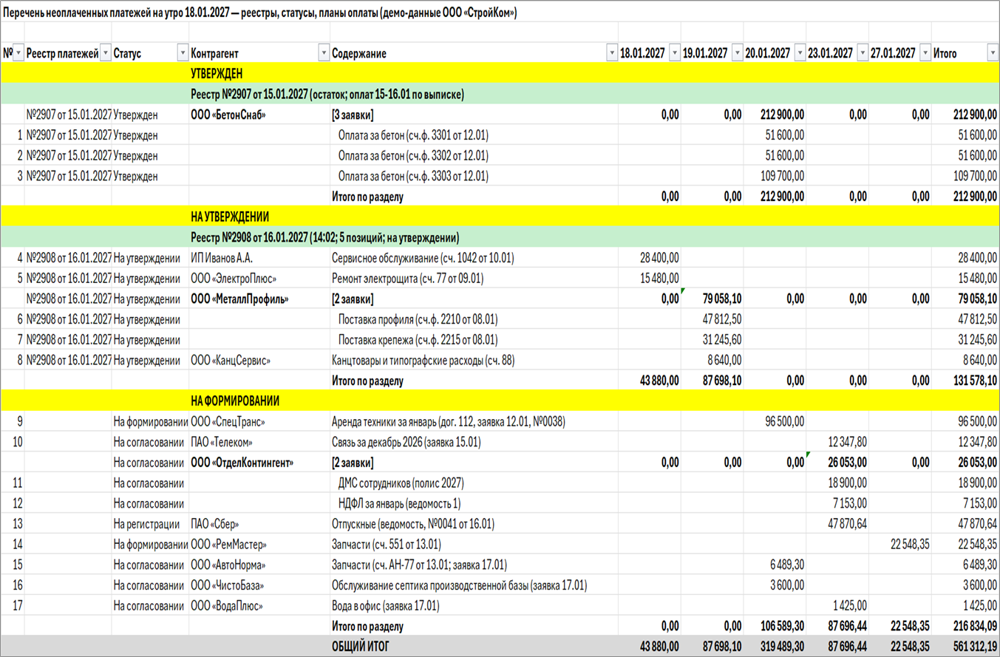

1. Конвейер «утро» (главный сценарий)
Утром агент получает 4 файла (выписка, реестры платежей, журнал заявок, перечень 1С) и за минуты строит перечень неоплаченных заявок с живыми формулами и независимой сверкой.

2. Каждый файл сам доказывает свою правильность
После сборки работают два независимых контролёра: (1) сборщик перед сохранением сверяет собственные контрольные суммы и не записывает файл при расхождении; (2) отдельный скрипт открывает готовый Excel заново и проверяет его «глазами со стороны» — суммы всех колонок, итоговые формулы, фильтры. Результат проверки хранится рядом с файлом.

3. Ежемесячный цикл: выгрузка 1С → разбивка по ЦФО → БДР
Раз в месяц конвейер берёт журнал проводок 1С и раскладывает его на статьи и подразделения, сверяя каждую сумму: расхождение раскладки с журналом — ноль, всё нераспределённое честно попадает в лист «Требует решения».
4. Дашборд руководителя
Деньги за день и бюджет года на одном экране; демо-версия на вымышленных данных открывается в браузере.

Как запустить у себя
Windows + Node.js + Excel. Полный пошаговый разбор на синтетических данных — инструкция демонстрации: генератор данных в комплекте, реальных выгрузок не требуется.